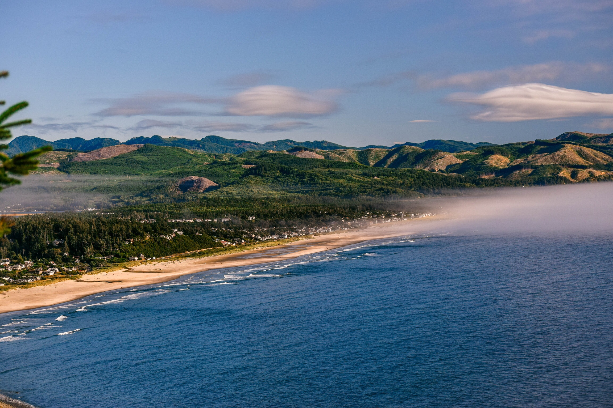
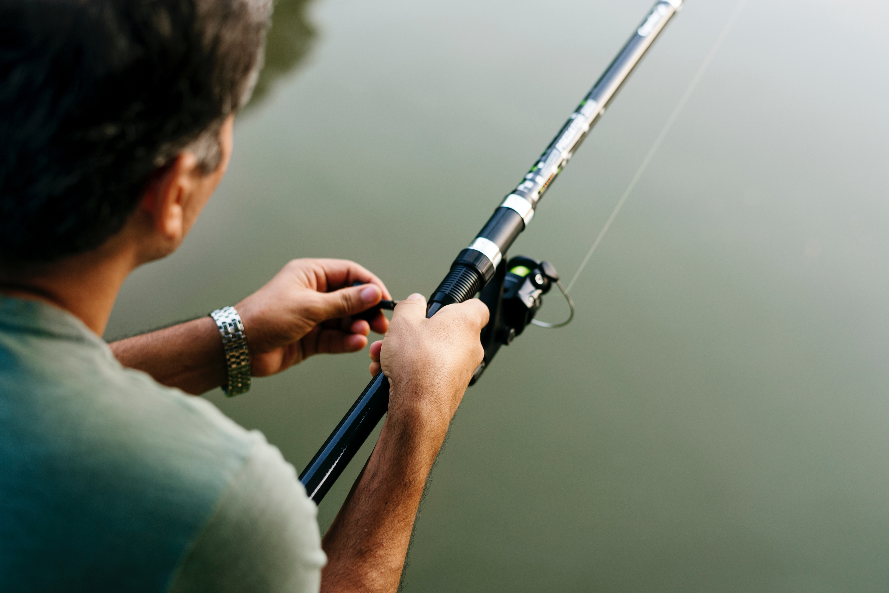

Background
Wanting to know the top reasons to visit Bermuda? Mark Twain wrote from Bermuda in 1910 during his long last visit - "You go to heaven if you want to, I'd rather stay here". In 2015, the readers of Conde Nast Traveler magazine have voted Bermuda in the top 5 islands in the world and that wasn't the first time. The magazine Outside which is the favorite of all outdoor enthusiasts has ranked Bermuda as the 'Best Island' in 2015.
History Main article: History of Bermuda The first European known to have reached Bermuda was the Spanish sea captain Juan de Bermúdez in 1505, after whom the islands are named. He claimed the islands for the Spanish Empire. Bermúdez never landed on the islands, but made two visits to the archipelago, of which he created a recognisable map. Shipwrecked Portuguese mariners are now thought to have been responsible for the 1543 inscription on Portuguese Rock (previously called Spanish Rock).[11] Subsequent Spanish or other European parties are believed to have released pigs there, which had become feral and abundant on the island by the time European settlement began. In 1609, the English Virginia Company, which had established Jamestown in Virginia two years earlier, permanently settled Bermuda in the aftermath of a hurricane, when the crew and passengers of the Sea Venture steered the ship onto the surrounding reef to prevent its sinking, then landed ashore.
The island was administered as an extension of Virginia by the Company until 1614. Its spin-off, the Somers Isles Company, took over in 1615 and managed the colony until 1684. At that time, the company's charter was revoked, and the English Crown took over administration. The islands became a British colony following the 1707 unification of the parliaments of Scotland and England, which created the Kingdom of Great Britain. After 1949, when Newfoundland became part of Canada, Bermuda became the oldest remaining British overseas territory. After the return of Hong Kong to China in 1997, Bermuda became the most populous remaining dependent territory (from 2002 overseas territory). Its first capital, St. George's, was established in 1612.[6]
Deep Sea Fishing
There is plenty to do in this 22 mile long island. One activity that shouldn't missed is Deep Sea Fishing. Grab a few friends head to The Dockyard and look for Cpt Hooper, he'll make sure you go home with the sea's bounty.
Packages
The sun comes up in Bermuda as early as March but for almost guaranteed sunshine headover any time from March until Septmeber.